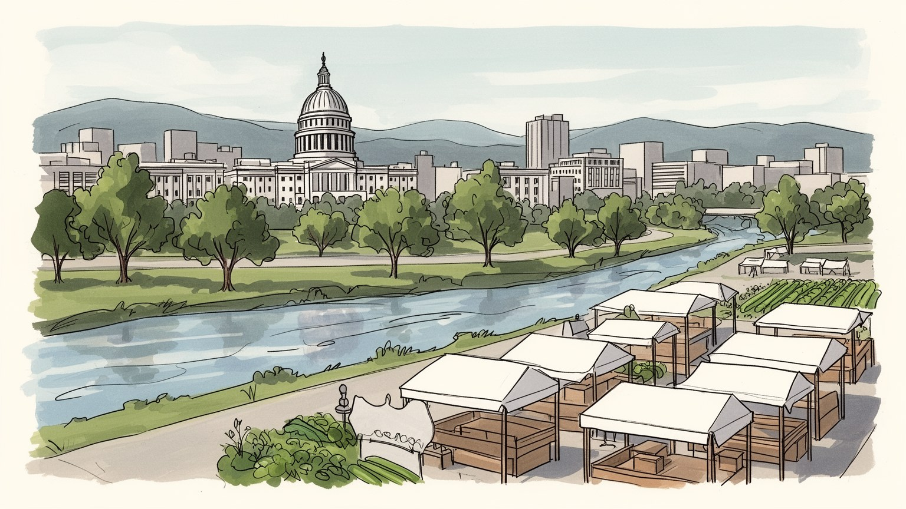
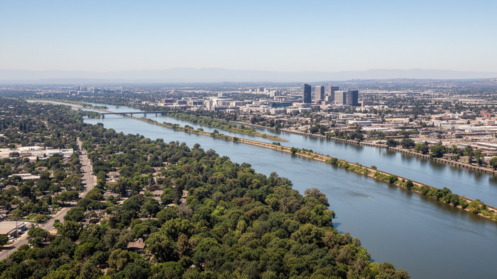
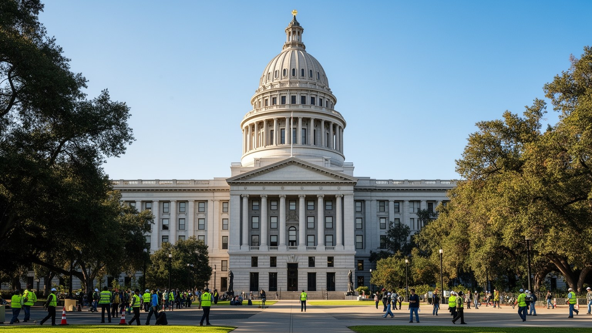
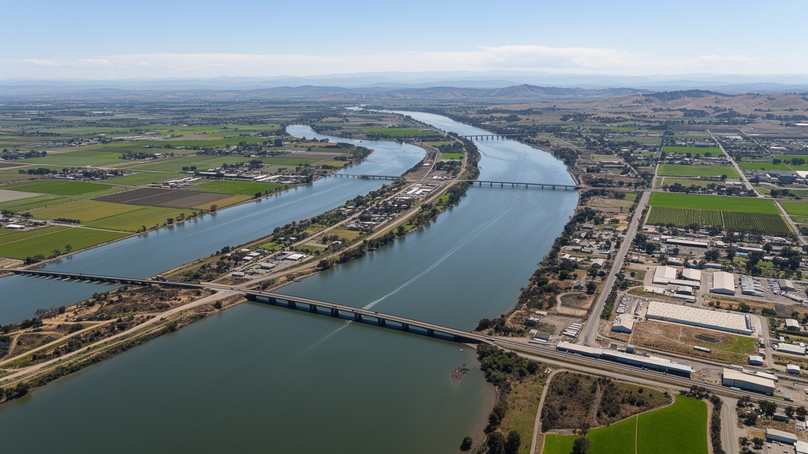
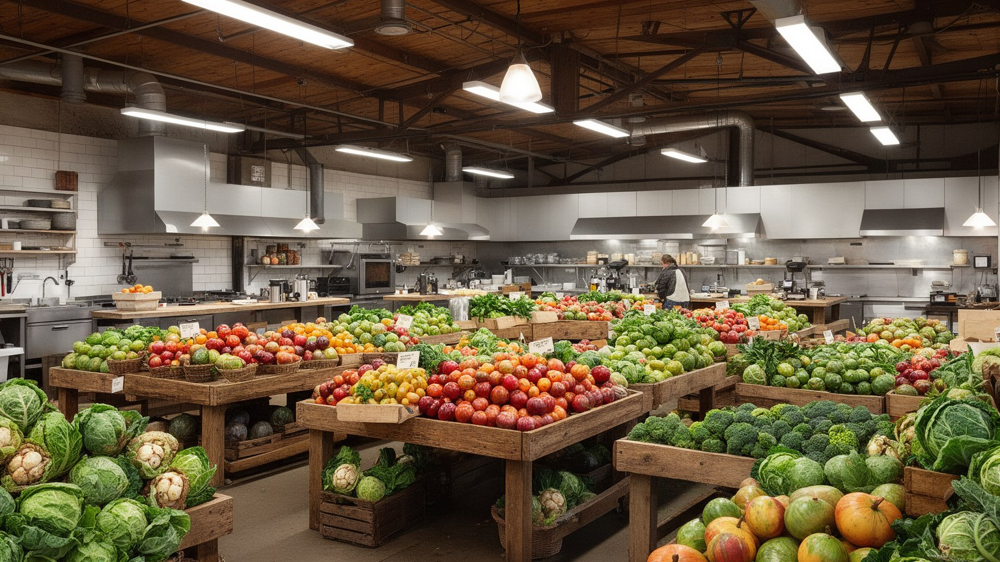
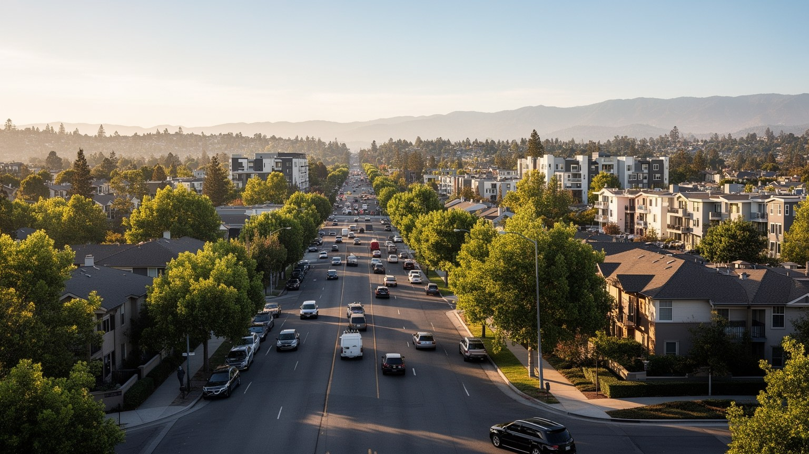
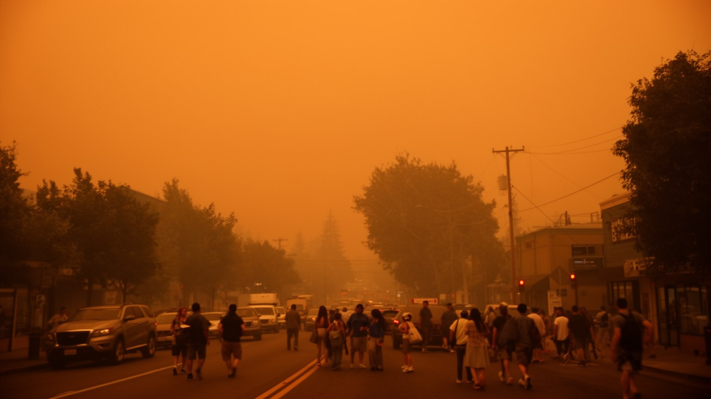
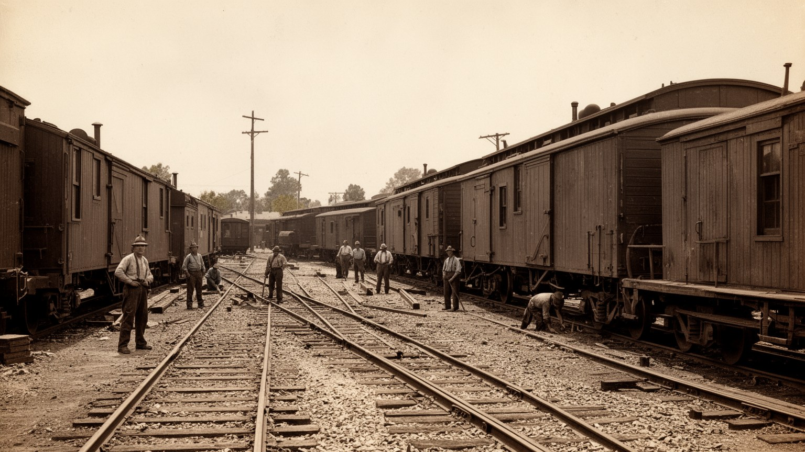
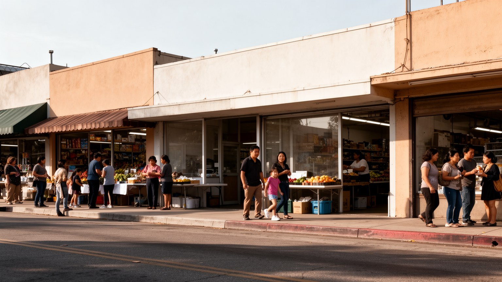
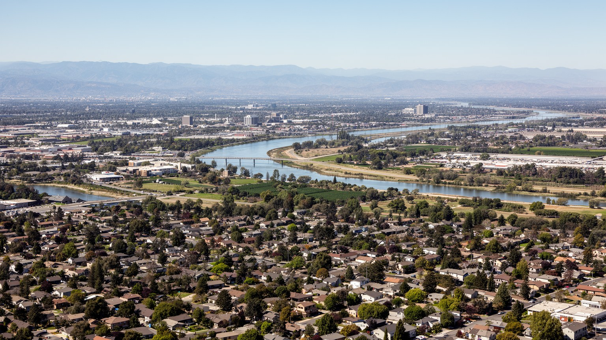

地政学
サクラメントは州議会、知事府、行政機関が集まるカリフォルニア州都である。水、住宅、移民、気候、農業、教育、財政をめぐる決定がここで作られ、海岸部と内陸部、都市と農村の利害を調整する場になる街です。

🇺🇸 アメリカ合衆国 / 北米 / World City Atlas
カリフォルニア州の政治を動かす内陸の州都。川とデルタ、水政策、農業の集散、鉄道史、住宅成長、山火事時代の暮らしが、木陰の多い街路で重なります。
都市の骨格
サクラメントは太平洋岸の大都市ではなく、州政府、水の配分、農業地帯、内陸物流、郊外住宅をつなぐ政治的な結節点です。静かな街路の背後で、カリフォルニアの将来をめぐる調整が続いています。

サクラメントは州議会、知事府、行政機関が集まるカリフォルニア州都である。水、住宅、移民、気候、農業、教育、財政をめぐる決定がここで作られ、海岸部と内陸部、都市と農村の利害を調整する場になる街です。
州政府、郡市行政、医療、大学、保険、農業流通、建設、物流が雇用を支える。公務員と専門職の安定の隣で、介護、清掃、配送、飲食、農産物加工の働き手が都市を動かし、家賃上昇が生活を圧迫する現実も続く街だ。
ゴールドラッシュと鉄道の記憶、メキシコ系、アジア系、黒人、難民コミュニティ、教会、寺院、モスク、食文化が重なる。州都らしい制度の街でありながら、移民の礼拝と市場が日常の文化を厚くしている街だ今も。
観光客は州議事堂、旧市街、川辺、鉄道博物館を巡るが、住民には猛暑、洪水リスク、山火事の煙、通勤、住宅費、ホームレス、水制限が切実である。木陰の多い穏やかさと政策課題が同居する都市なのです今も続く。

サクラメントを読む入口は、サクラメント川とアメリカン川が出会う低地の都市という事実である。川は金鉱地帯へ向かう交通路であり、農産物と木材を運ぶ道であり、現在も水道、洪水対策、遊歩道、住宅地の価値を左右する骨格である。中心市街地は平坦で、樹木の多い街路が落ち着いた印象を作るが、その穏やかさの下には堤防、排水、浸水想定、上流の雪解け、デルタの潮位という緊張がある。太平洋岸のサンフランシスコやロサンゼルスに比べると、サクラメントは目立たない内陸都市に見える。しかし州の水、農地、道路、鉄道、住宅成長を考えると、ここはカリフォルニアの内側を束ねる結節点になる。川沿いの公園や旧市街は観光の顔であると同時に、洪水をどう受け流し、どの地区を守り、どの開発を認めるかという政策の現場でもある。地形を意識すると、州都の行政機能と低地のリスクが同じ都市に置かれている意味が見えてくる。サクラメントの風景は派手なスカイラインより、川、堤防、木陰、平坦な碁盤目、郊外へ伸びる道路に表れる。水辺の美しさは、常に管理と記憶を必要とする公共財である。雨季の増水と乾季の水不足が同じ年に現れるため、都市の安心は季節ごとの備えに支えられる。川を楽しむ生活と川から身を守る制度が近接している点に、サクラメントの地形的な個性がある。

サクラメントの都市性は、州都であることから始まる。州議事堂、知事府、行政機関、ロビー団体、法律事務所、報道機関、労働組合、非営利団体が近い距離に集まり、カリフォルニアの予算、住宅、教育、刑事司法、移民、気候、農業、水、医療をめぐる議論が日常的に行われる。ここで作られる政策は、シリコンバレーの企業、ロサンゼルスの港湾、セントラルバレーの農場、山火事に悩む山麓の町、住宅費に苦しむ沿岸都市へ広く届く。州都の街路はワシントンのような国家権力の重さとは違い、州内の多様な利害が出入りする実務的な場所である。公務員の通勤、委員会の証言、学校団体の訪問、環境団体の集会、企業のロビー活動、先住民や移民団体の訴えが、平日の中心部に政治のリズムを作る。サクラメントを見る時、観光名所としての議事堂だけでなく、誰が意思決定に近く、誰の声が遠くなりやすいかを読む必要がある。州政府への依存は安定した雇用を生む一方、政策変更や財政の波にも都市経済をさらす。サクラメントの重要性は人口規模より、巨大州の制度を毎日動かす機能にある。地味な会議室と街頭の抗議が、カリフォルニアの未来を同じ街で形づくる。州都では、政策専門家だけでなく、学校の生徒、看護師、農家、家主、入居者、部族政府の代表も中心部へ来る。その移動のしやすさと聞かれやすさが、都市の民主性を左右する。

サクラメント周辺を理解するには、サクラメント・サンホアキンデルタを避けられない。デルタは川、湿地、農地、堤防、水路、送水施設が入り組む場所であり、北部の水を南部の都市や農業地帯へ運ぶカリフォルニア水政策の心臓部である。水は飲み水であると同時に、米、果樹、ナッツ、酪農、都市開発、魚類保護、先住民の権利、レクリエーションをめぐる争点になる。干ばつが長引けば、農家、都市住民、環境団体、先住民、漁業者、開発業者の利害は鋭く対立する。サクラメントはその調整を身近に見る都市であり、川辺の景観は単なる自然ではなく、法律、技術、堤防管理、気候変動の集合体である。デルタの地盤沈下や塩水遡上、老朽化した堤防、洪水、地震リスクは、州全体の水供給を不安定にする。水を遠くへ送る仕組みは、沿岸部や南部の成長を支えたが、同時に生態系や地域社会へ負担を押しつけてきた。サクラメントを水の都市として読むことは、蛇口の先にある政治を読むことである。雨の少ない夏、山の雪、貯水池、田畑、都市の芝生、絶滅危惧種が、同じ水の量をめぐってつながる。水の公平な配分は、州都が扱う最も生活に近い巨大課題である。水路の管理は技術者だけの仕事ではなく、漁業の回復、農家の収入、家庭の節水、先住民の文化、都市の成長速度を結び直す公共判断である。デルタを守ることは、州の遠い場所に住む人の暮らしを守ることでもある。

サクラメントは自らを農場から食卓への都市として語ることが多い。周辺にはセントラルバレーの肥沃な農地が広がり、米、トマト、果物、ナッツ、野菜、ワイン用ブドウ、酪農が州の食料経済を支える。中心部のレストラン、ファーマーズマーケット、食品加工、流通倉庫、学校給食、大学研究、農業政策は、近い距離で結びついている。食の豊かさは観光の魅力になるが、その背後には水の配分、農薬、土地価格、移民労働、季節労働者の住まい、熱波の中の作業、食品価格の上昇がある。サクラメントの料理文化は、高級な地産地消だけでなく、メキシコ系、アジア系、黒人、難民コミュニティの家庭料理と市場によって厚みを持つ。農地が近いからといって、すべての住民が新鮮で健康的な食へ容易に届くわけではない。低所得地区では車がないと買い物が難しく、食料不安や医療費の問題が重なることもある。サクラメントを食の都市として読むには、人気店のメニューだけでなく、畑で働く人、加工場、配送、学校、フードバンク、移民の小商店を同じ地図に置く必要がある。農業州の州都であることは、食を楽しむ権利と、食を作る人の労働条件を同時に問う立場を意味する。豊かな市場の色彩は、政策と労働なしには続かない。朝の市場に並ぶ野菜は、灌漑、道路、冷蔵倉庫、移民家族の働き方を通って届く。食卓の近さを誇るなら、その近さが低所得の家庭や農業労働者にも届くかを見なければならない。

サクラメントの住宅問題は、地域内の成長だけでなく、カリフォルニア全体の住宅危機と結びついている。ベイエリアや沿岸部で家賃と住宅価格が上がるほど、より手頃な住まいを求める人がサクラメント都市圏へ移り、リモートワーク、州政府の雇用、医療、教育、物流の仕事が人口を支える。新しい集合住宅や郊外開発は住戸を増やすが、中心部の再開発は古い住民や小商店を押し出すことがある。郊外へ広がる住宅地は庭や広さを提供する一方、自動車依存、通勤時間、温室効果ガス、水需要、学校区の格差を強める。ホームレスの増加は、家賃、退去、精神医療、依存症、刑事司法、家族関係の破綻が重なる問題として街路に現れる。サクラメントでは、州都として住宅政策を議論する場所と、住宅不足に直面する生活の場所が同じ都市にある。低価格住宅、入居者保護、公共交通沿線の開発、古い住宅の改修、郊外自治体との調整が不可欠になる。住宅は単なる不動産ではなく、公務員、看護師、教師、介護職、農産物流通の働き手が都市に残れるかを決める基盤である。成長を歓迎するだけではなく、誰がその成長の内側に住み続けられるかを問うことが、サクラメントの都市政策の中心になる。住まいの距離は政治参加の距離にも変わる。駅やバス停に近い住宅を増やせるか、古い住宅を安全に保てるか、退去を防ぐ支援を届けられるかで、都市の包容力は大きく変わる。

サクラメントの気候は、暑く乾いた夏と雨の多い冬を持つ地中海性の性格が強い。夏の午後は気温が高く、木陰、冷房、夜の涼しさ、水分補給が生活の安全に直結する。街路樹の多さは都市の誇りであり、猛暑を和らげるインフラでもあるが、地区によって木陰の量や冷房へのアクセスには差がある。近年は山火事の煙が都市生活を大きく変えた。火災が市内で起きていなくても、シエラネバダや周辺地域から運ばれる煙は空を暗くし、学校、屋外労働、スポーツ、呼吸器疾患、高齢者の健康に影響する。干ばつ、熱波、電力需要、洪水、保険料の上昇は、気候変動を抽象的な問題ではなく家計と公共サービスの問題にする。低所得者、屋外で働く人、ホームレス、車を持たない人、障害のある人は、極端な暑さや煙の影響を受けやすい。サクラメントを気候の都市として読むには、州の環境政策だけでなく、避暑センター、街路樹の維持、住宅の断熱、電力網、避難計画、学校の空調、労働安全を同じ生活基盤として見る必要がある。気候対策は遠い山の森林管理だけでなく、日々歩く歩道に影を作ることでもある。州都の政策が、住民の体温と呼吸に直接つながる時代になっている。煙の日に窓を閉められる家、冷房代を払える家、屋内で休める職場があるかは、健康格差そのものになる。気候への適応は、都市の弱い場所を先に見つける作業でもある。

サクラメントの歴史は、ゴールドラッシュ、川港、鉄道によって形づくられた。金鉱地帯へ向かう人と物資は川をさかのぼり、商人、労働者、宿屋、倉庫、銀行、新聞、行政を集めた。大陸横断鉄道の西側拠点としての役割は、都市を内陸交通の要所へ変え、現在の鉄道博物館や旧市街の景観にその記憶を残している。だがこの歴史は開拓の成功物語だけではない。先住民の土地の喪失、中国系労働者への差別と排除、洪水との闘い、疫病、労働の危険、商業利益の集中が同時にあった。旧市街の木造風景は観光客に分かりやすい過去を見せるが、都市の本当の歴史は、川沿いの地盤、堤防の建設、鉄道労働、民族別の居住、行政の成立まで含めて読む必要がある。交通の変化は今も続いている。高速道路、郊外道路、ライトレール、アムトラック、自転車道、貨物物流が、州都の移動を支えている。サクラメントを鉄道史から読むことは、都市がどのように西部の資源、労働、移民、国家の拡張と結びついたかを理解することになる。観光の木造街区の奥には、誰が線路を敷き、誰が利益を得て、誰が追いやられたかという問いが残る。その問いを残したまま歩く時、旧市街は単なる懐古ではなく、現在の移動と格差を考える入口になる。保存された駅舎や倉庫は、過去を飾るだけでなく、新しい交通と歩行者空間をどう結び直すかを考える材料でもある。歴史の展示が現在の政策へつながる時、旧市街は生きた都市の記憶になる。

サクラメントは州都の制度都市であると同時に、多様な移民と難民の生活都市でもある。メキシコ系、フィリピン系、中国系、ベトナム系、インド系、モン系、ロシア語圏、ウクライナ系、中東やアフリカ出身の住民、黒人コミュニティ、先住民の人々が、学校、商店、礼拝所、市場、医療、行政窓口で日常を作っている。教会、寺院、モスク、グルドワラ、仏教寺院は信仰の場であるだけでなく、言語支援、食料支援、仕事探し、葬送、子どもの教育を支える拠点にもなる。難民の受け入れは都市に新しい食、音楽、商店、言語をもたらす一方、住居、医療、資格認定、学校での通訳、差別への対応を必要とする。サクラメントの多文化性は、観光用の華やかな地区だけにあるのではなく、郊外の小さな店、週末の礼拝、家庭内の送金、放課後の補習、公共交通での通勤に現れる。州都として移民政策を議論する街が、同時に移民の生活の場であることは重要である。政策の言葉が住民の窓口体験、家賃、雇用、学校、警察との関係に変わるからだ。多様さを都市の強みにするには、祝祭だけでなく、通訳、住宅、労働権、宗教上の配慮、地域団体への支援が必要になる。サクラメントの文化の厚みは、制度と生活をつなぐ移民コミュニティの粘り強さに支えられている。子どもが複数の言語を行き来し、親が資格や仕事を探し、宗教施設が相談窓口になる日常は、都市の見えにくい公共インフラである。多文化の街を名乗るなら、その支援を安定して保つことが欠かせない。
サクラメントの政治は議事堂の中だけで完結しない。州庁舎の周辺では、労働組合、環境団体、農業団体、教師、医療関係者、学生、先住民団体、移民支援団体、銃規制や刑事司法改革を求める人々、住宅運動、税制や規制に反対する人々が集まり、街路を政策参加の舞台にする。州全体を代表する制度は、人口の多い沿岸都市、保守的な農村部、山岳地、郊外、新しい移民コミュニティの声を一つの場所に集めるため、対立も見えやすい。抗議は混乱ではなく、代表されにくい人が可視化される重要な手段である。警察の対応、公共空間の使い方、メディアの描き方、ロビー活動との距離は、民主主義の質を示す。サクラメントでは、政策の文章が住民の生活へ変わるまでの距離が近い。家賃、医療費、水制限、火災対策、学校予算、刑務所政策、労働基準、移民の権利は、会議室と広場の両方で争われる。都市を見る時、静かな行政都市という印象だけでは不十分である。声を上げる人々の身体、プラカード、通訳、子ども連れの参加、夜勤明けの労働者の証言が、州都の公共性を作っている。サクラメントの街路は、政策が専門家だけのものではないことを示す場所である。抗議を受け止める空間があることは、州都の大切な都市機能の一つだ。参加しやすい広場、公共交通、報道の目、多言語の案内がそろうほど、政治は遠い制度から生活の権利へ近づく。街路の声を聞けるかどうかが、州都の信頼を測る。

サクラメントを読むことは、目立たない内陸州都の中に、カリフォルニア全体の矛盾を見つけることである。州議事堂は政策の中心であり、川とデルタは水の政治を示し、周辺農地は食と労働の条件を映し、住宅地は沿岸部から押し寄せる価格圧力を受け止める。鉄道と旧市街は西部拡張の記憶を残し、多様な移民コミュニティは現在の公共サービスと文化を支えている。気候変動は猛暑、干ばつ、山火事の煙、洪水として生活を変え、州都の環境政策を住民の呼吸と家計へ結びつける。サクラメントの魅力は、派手な観光都市ではなく、制度、川、木陰、食、郊外、抗議が近い距離で重なる点にある。穏やかな街路を歩くと、州の巨大な議題が日常の小さな選択へ落ちていることが分かる。どの水を使い、どの住宅を建て、どの農業を支え、誰の声を議会へ届け、どの地区に木陰を増やすのか。こうした問いは抽象的な政策ではなく、通勤、学校、買い物、礼拝、川辺の散歩に関わる。サクラメントは、カリフォルニアの成功と限界を静かに翻訳する都市である。だからこそ、規模の大きさではなく、制度と生活を結ぶ力によって重要になる。川の低地にある州都は、気候と民主主義を同時に試される場所でもある。大都市の影に隠れがちなこの街を読むと、政策が暮らしへ届くまでの道筋と、その途中でこぼれ落ちる人々の存在が見えてくる。